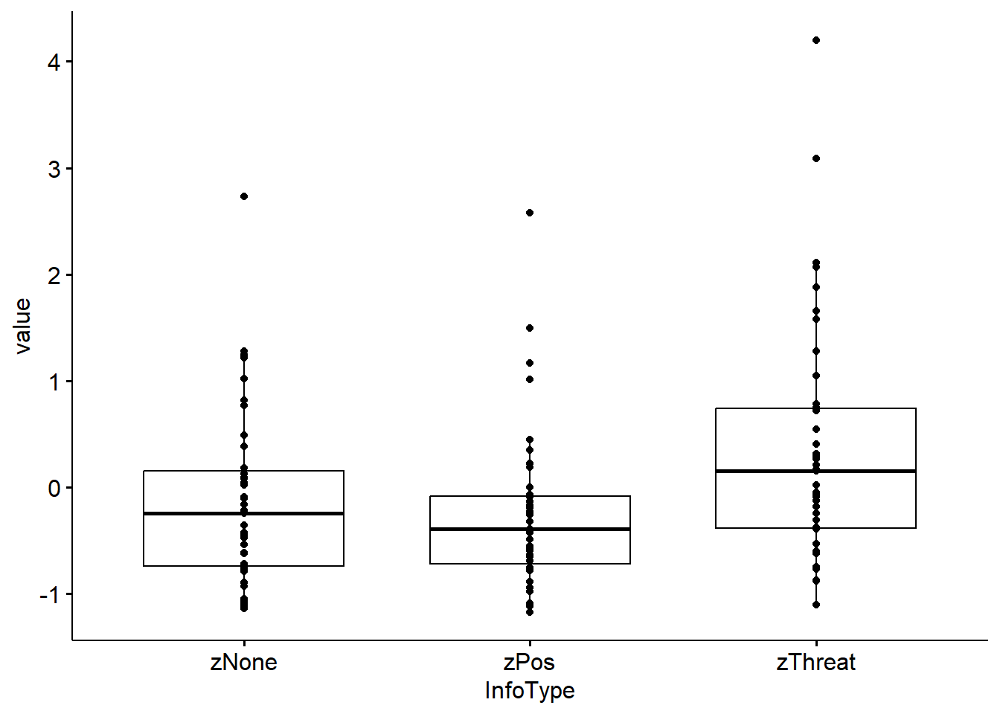
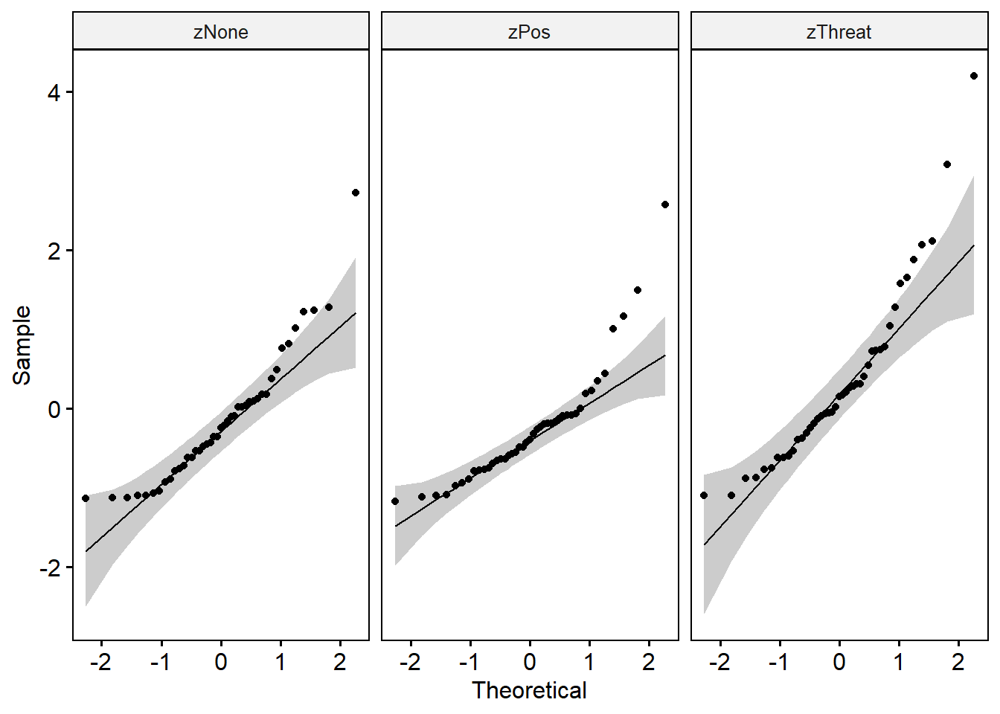

Several dependent means
The data used in this example is the same as for the dependent t-Test (i.e.: FieldLawson2003.csv)
Check Assumptions
To compare the latencies for all three boxes, we could use a repeated measure ANOVA function such as the aov(), or as an alternative the rstatix::anova_test() function. But before we do the analysis, we should check for possible violations of the assumptions:
# Assumption check
fieldLong <- fieldLong[,2:4]
fieldLong$id <- factor(fieldLong$id)
fieldLong$InfoType <- factor(fieldLong$InfoType)
pander(fieldLong %>% group_by(InfoType) %>% identify_outliers(value))| InfoType | id | value | is.outlier | is.extreme |
|---|---|---|---|---|
| zNone | bku59 | 2.729 | TRUE | FALSE |
| zPos | wdd2 | 2.574 | TRUE | TRUE |
| zPos | inl37 | 1.491 | TRUE | FALSE |
| zPos | vxp18 | 1.008 | TRUE | FALSE |
| zPos | pap44 | 1.166 | TRUE | FALSE |
| zThreat | tat36 | 4.2 | TRUE | TRUE |
| zThreat | gtu30 | 3.085 | TRUE | FALSE |
pander(rbind(shapiro_test(fieldWide$zThreat),
shapiro_test(fieldWide$zPos),
shapiro_test(fieldWide$zNone)))| variable | statistic | p.value |
|---|---|---|
| fieldWide$zThreat | 0.8894 | 0.0006053 |
| fieldWide$zPos | 0.8463 | 4.207e-05 |
| fieldWide$zNone | 0.9047 | 0.001741 |


Standard ANOVA
Since ANOVA’s are special forms of linear models, we could also use the lm() function. The difference between these functions is the output. The aov() returns the table of \(F\)-statistics, whereas lm() returns the specific parameter estimates, significance tests and overall fit statistics.
The formula (model) of the aov() is specified as:
In words: we predict the Value from the variable InfoType plus an error term for that variable that is nested within the variable id. It is the error term that tells the function that it is a repeated measures design (because the error term for the predictor variable is nested within cases).
| Df | Sum Sq | Mean Sq | F value | Pr(>F) | |
|---|---|---|---|---|---|
| Residuals | 42 | 51.33 | 1.222 | NA | NA |
| InfoType | 2 | 8.839 | 4.42 | 7.103 | 0.001412 |
| Residuals1 | 84 | 52.26 | 0.6222 | NA | NA |
# Alternativ to aov(): rstatix::anova_test()
res.anova <- pander(anova_test(data = fieldLong,
dv = value,
wid = id,
within = InfoType))The results show means which are significantly different with latencies after threat information being significantly longer than for positive or no information. The results of the follow-up-test are shown below:
pander(pairwise.t.test(fieldLong$value, fieldLong$InfoType, p.adjust.method = "bonferroni", paired = T))method: paired t tests
data.name: fieldLong\(value and fieldLong\)InfoType
p.value:
zNone zPos zPos 1 NA zThreat 0.01922 0.005809 p.adjust.method: bonferroni
Robust ANOVA
For the robust test we will use the rmanovab() function and get the post hoc tests with pairdepb(). The option tr controls the amount of trim (and the default of 20% is advised). For the bootstrap-option the default is set to nboot = 599 (sufficient for now, but it is common to use nboot = 1000 or nboot = 2000).
- test: 6.751
- crit: 3.368
- call:
rmanovab(y = fieldLong$value, groups = fieldLong$InfoType, blocks = fieldLong$id, tr = 0.2, nboot = 599)
The robust test results also show a significant difference between trimmed mean approach times to the three animals, \(F_t = 6.75, p < .050\). The results of the robust follow-up test show the difference between trimmed means (\(\hat{\psi}\)), the associated bootstrap confidence interval, the test of this difference, the critical value of the test and whether the trimmed means are significantly different (at \(\alpha = 0.05\)):
comp:
Group Group psihat ci.lower ci.upper crit 1 2 0.5232 0.1403 0.9062 3.389 2.48 1 3 0.4046 0.007598 0.8015 2.528 2.48 2 3 -0.1187 -0.4462 0.2088 -0.8989 2.48 fnames: zThreat, zPos and zNone
call:
pairdepb(y = fieldLong$value, groups = fieldLong$InfoType, blocks = fieldLong$id, tr = 0.2, nboot = 599)
We would report that the trimmed mean difference in latency between the threat box and the positive, \(\hat{\psi} = 0.52, [0.14,0.90]\), and no information, \(\hat{\psi} = 0.40, [0.01,0.80]\)1 boxes were significant. The trimmed mean difference between the positive and the no information box was not, \(\hat{\psi} = -0.12, [-0.44,0.90]\).
be cautios with the interpretation of an effect if the \(CI\) has an upper, or lower limit so close to Null!↩︎